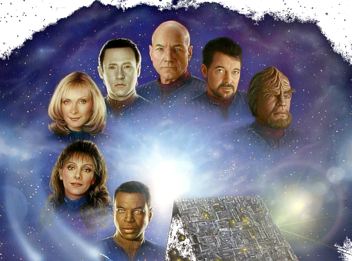

In the 23 century, when a mysterious alien cloud called V'Ger approaches Earth, destroying everything in its path. James T. Kirk got a mission to save the planet and determine V'Ger's origins, in the end, they find the V'Gre is the machine send form Earch in 20 century.
When Khan escapes from a 15-year exile to exact revenge on Kirk, the crew of the Enterprise must stop him from acquiring a powerful terraforming device named Genesis.
After the death of Spock the Enterprise returns to Earth. When Kirk learns that Spock's spirit is held in the mind of Dr.McCoy. He decided to get Spock back!
V'Ger is back, destroy everything. They will gone only after the Enterprise go back to the 18 century and get humpback whales.
An adventure explore the unknown universe, the Enterprise find gods from ancient.
After that the Klingons conflict, the crew was sent to a remote prison planet, with the help of local people, finally they escape from there and return to Earth
Kirk, who as guests take new Enterprise trial, received a rescue mission on the way. In another time and space, Dr.Soren are trying to destroy the planet and attack the Enterprise. The only way to help the new Captain Picard to prevent Sauron, is Captain Kirk who disappeared 78 years.
The crew return to the past, in order to allow the history which humans and Vulcans first exposed normal. They did everything possible to prevent the Borg attack in the 21st century Earth Box
Lieutenant Commander Data is temporarily transferred to an undercover mission observing the peaceful Ba'ku people.
During a session of the Romulan Imperial Senate, the military offers the plans to join forces with the Reman military and invade the Federation, but the Praetor refuses
In 2233, the Federation starship USS Kelvin is investigating a "lightning storm" in space.
In 2259, the starship USS Enterprise studies a primitive culture on the planet Nibiru. Captain James T. Kirk and his First Officer, Commander Spock, save the planet's inhabitants from an extinction-threatening volcanic eruption.